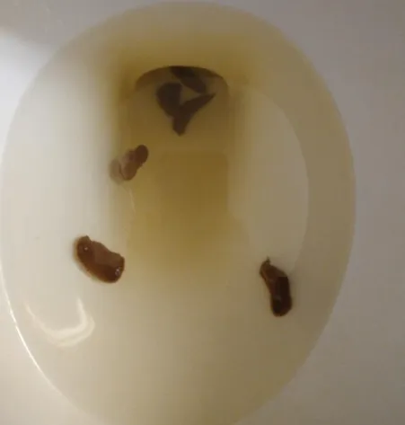
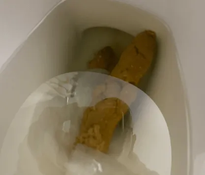
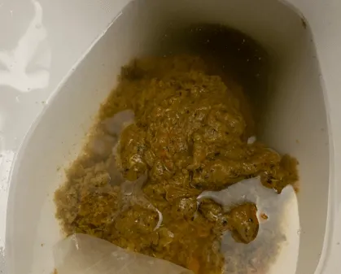
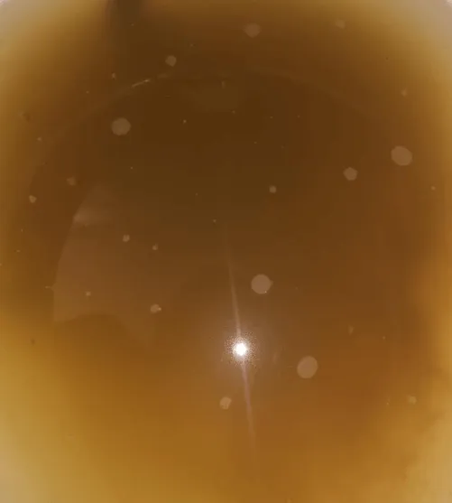

more formally known as
THE BRISTOL STOOL CHART
It's a visual dictionary for poop. Seven types, sorted by shape and texture, from hard little pebbles to pure liquid.
It was created so you don't have to describe it. You just point at a number.
It's a visual dictionary for poop. Seven types, sorted by shape and texture, from hard little pebbles to pure liquid.
It was created so you don't have to describe it. You just point at a number.






